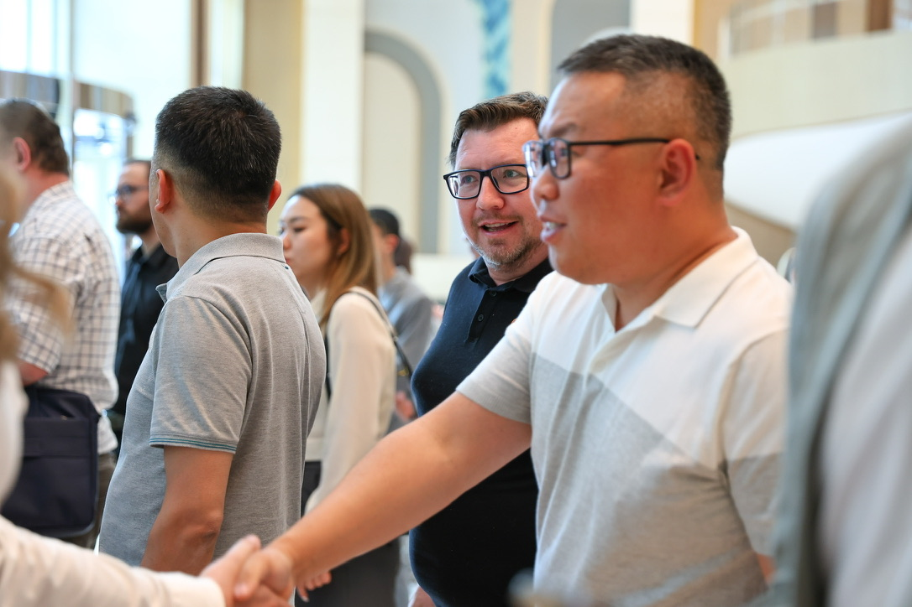
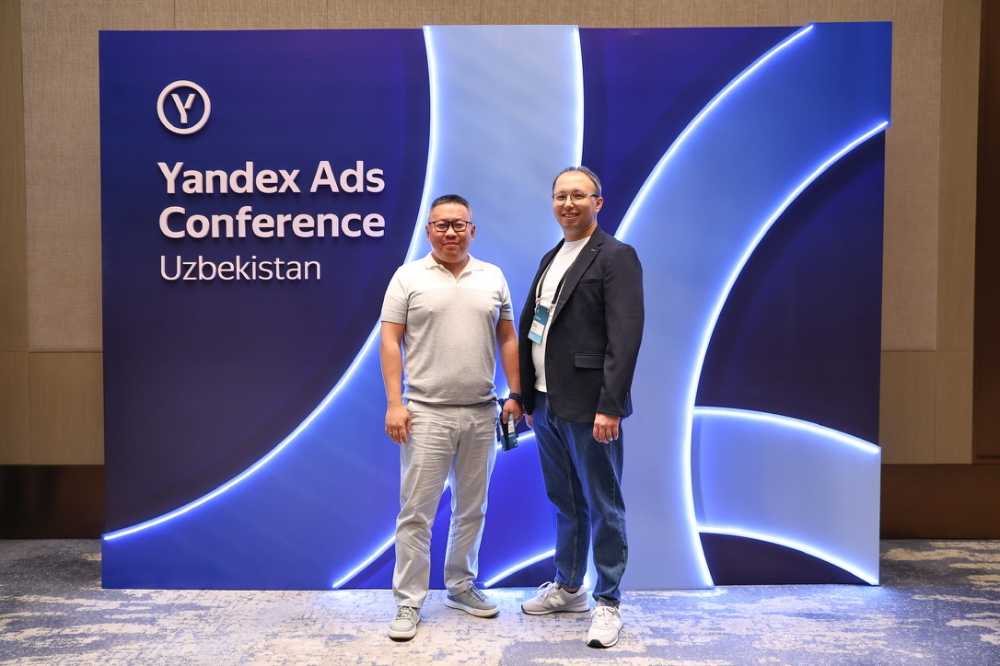
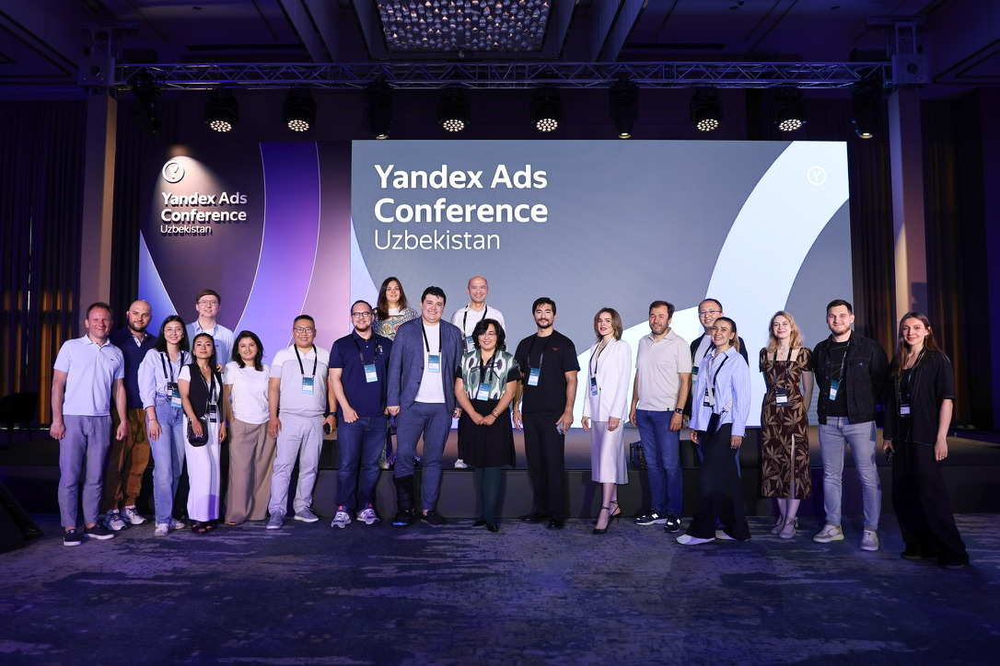
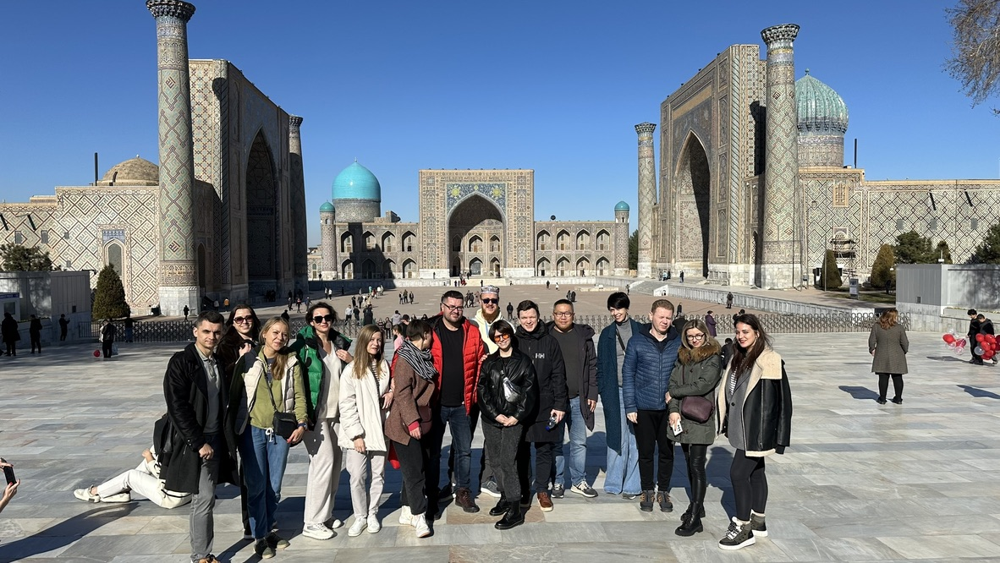
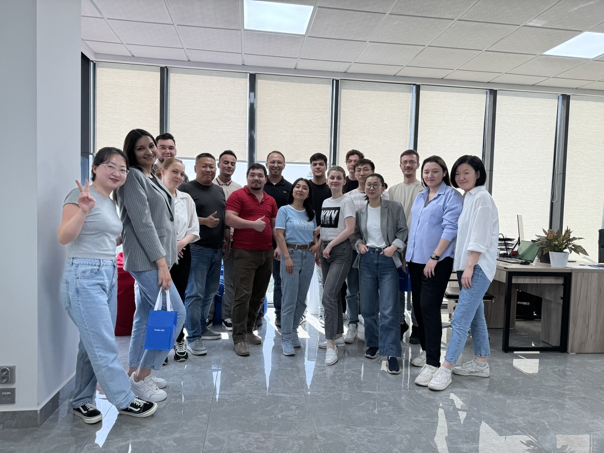
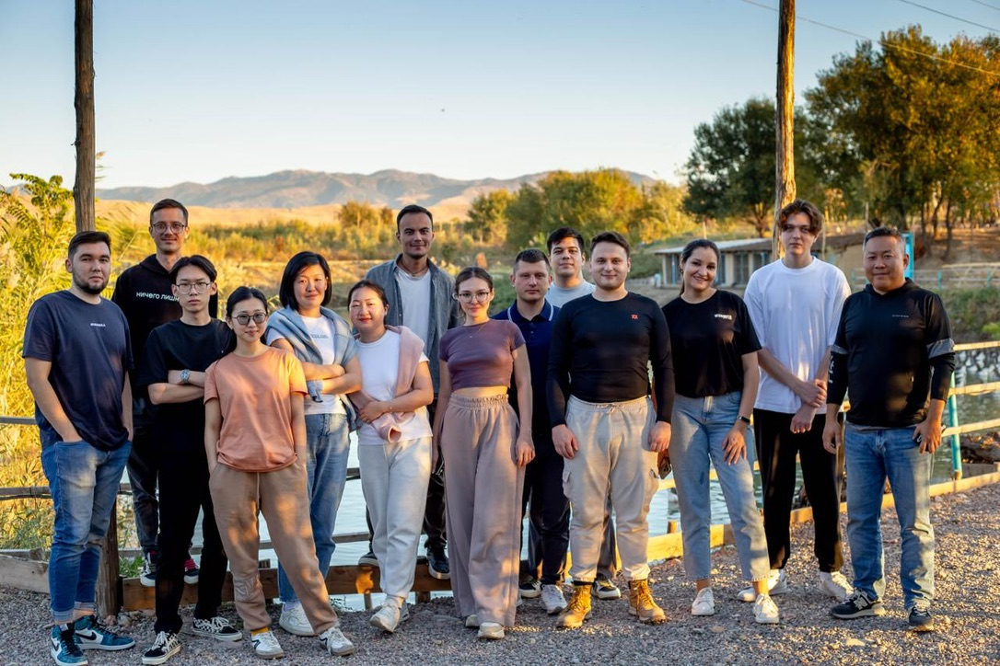

Ким Игорь
13 лет в digital-маркетинге, с 2019 года возглавляю Wunder Digital Uzbekistan. Занимаюсь digital- и AI-трансформацией маркетинга, работаю с Samsung, Beeline, Pepsi. Ниже — хронология, у каждой записи есть ссылка на источник.
- 01CEO Wunder Digital Uzbekistan
- 02Член правления Маркетинговой ассоциации Узбекистана
- 03Председатель digital-комитета Маркетинговой ассоциации Узбекистана
Хронология
В работе



О себе
CEO Wunder Digital Uzbekistan, эксперт в области digital-маркетинга. Более 13 лет в индустрии: эффективность рекламных инвестиций, performance-маркетинг, внедрение современных digital-решений.
Возглавляет офис Wunder Digital в Узбекистане с момента основания и отвечает за стратегическое развитие компании на локальном рынке. До прихода в Wunder Digital занимал руководящие должности в крупных международных компаниях, где отвечал за digital-продвижение. Работает с крупнейшими рекламодателями рынка: Samsung, Beeline, Pepsi и др.
Входит в топ-35 маркетологов Узбекистана, представляет Digital-комитет Маркетинговой ассоциации Узбекистана, выступает на форумах по digital-трансформации, аналитике и будущему рекламного рынка, работает в составе жюри профессиональных конкурсов.
Коротко
Опыт работы
Открыл офис Wunder Digital в Узбекистане с нуля: регистрация, команда, коммерческая стратегия, каналы продаж. В 2020 году агентство признано №1 по контекстной рекламе и №1 в SEO в Узбекистане.
Монетизация публичных Wi-Fi-сетей. Провёл проект от идеи до монетизации, защитил технико-экономическое обоснование перед национальным оператором, подключил 40 партнёров по Ташкенту.
Здесь начался путь в digital: изучил веб-разработку, рекламу Google и аналитику — сделал сайт компании и сам настроил интернет-рекламу. Организовал сеть сбыта с нуля, лучшие результаты по продажам за четыре года.
Поставки промышленного оборудования от китайских заводов: пивоваренные линии, прессовое оборудование, стройматериалы.
Интернет-провайдер на технологии WiMAX, корпоративный сегмент.
Новое направление компании в Астане: компьютерное оборудование и системы видеонаблюдения, набор команды.
Компьютерное и периферийное оборудование, Xerox и Kyocera, Екатеринбург.
Дистрибуция ИТ и телекоммуникаций в СНГ.
Первая работа и знакомство с рекламным рынком — на него он вернётся десять лет спустя. Форум IBM Innovation Day, запуск бренда Vogue Arome, программа вакцинации по заказу UNICEF.
Роли и должности
Достижения и награды
Включён в список ведущих маркетологов страны по итогам 2025 года.
источникСтатус получен в 2023 году и подтверждён в 2025-м — это топ-3% партнёров Google.
источникАгентство под руководством Игоря Кима продлило статус сертифицированного агентства Meta: 20 сертифицированных специалистов в команде.
источникВыступления
Жюри и судейство
Инструменты и платформы
Публикации в медиа
Команда


